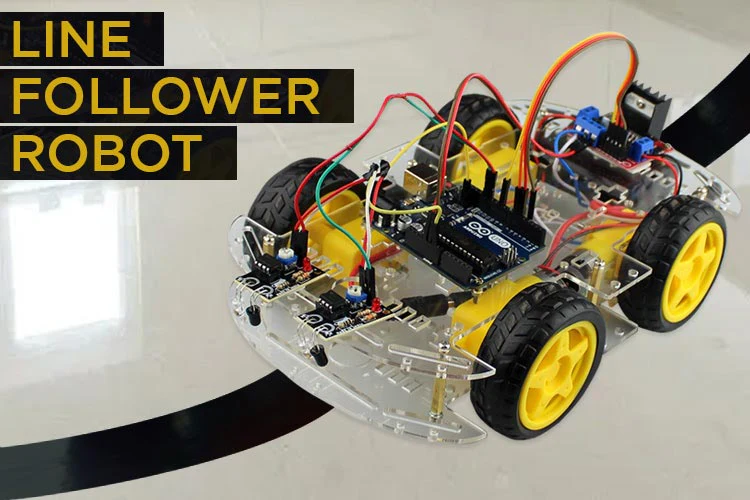

Introduction

Group menber
- Bihari Mali
- Suyash Sahu (Team Leader)
- Shashwat Khandelwal
- Kapil Verma
Line Follower Robot
Introduction
A line follower robot is an autonomous robot designed to follow a specific path, usually a black line on a white surface.
It uses sensors, typically infrared (IR) sensors, to detect the line and navigate along it.
The sensors send data to a microcontroller, such as an Arduino, which processes the information and controls the motors to keep the robot on track.
Component Required
Hardware
- IR sensor 2p
- Aurdino UNO 1p
- switch(5v) 1p
- Motor drivwer (L298N) 1p
- Battery(12v) 2p
- motor() 2p
Software
Linefollower Code
Wokrking Process
Line Detection:
IR sensors detect the line by emitting infrared light and measuring the reflected light. When the light hits the line, it gets absorbed, and when it hits the surface, it gets reflected back to the sensors1.
Signal Processing:
The microcontroller receives signals from the IR sensors. It determines the robot's position relative to the line1.
Movement Control:
Based on the sensor data, the microcontroller sends commands to the motor driver to adjust the speed and direction of the motors.
Correction:
If the robot deviates from the line, the sensors detect the deviation, and the microcontroller adjusts the motor speeds to bring the robot back on track.
Future Scope
Multiple Line Tracking:
Enhancing robots to follow multiple lines simultaneously for complex navigation tasks.Obstacle Detection:
Integrating sensors to detect and avoid obstacles, making the robots more versatile and safe.Wireless Control:
A dding wireless communication modules for remote control and coordination with other robots.Autonomous Navigation:
Improving algorithms for dynamic path planning and real-time decision-making.Object Detection and Recognition:
Incorporating advanced sensors and AI to identify and interact with objects.